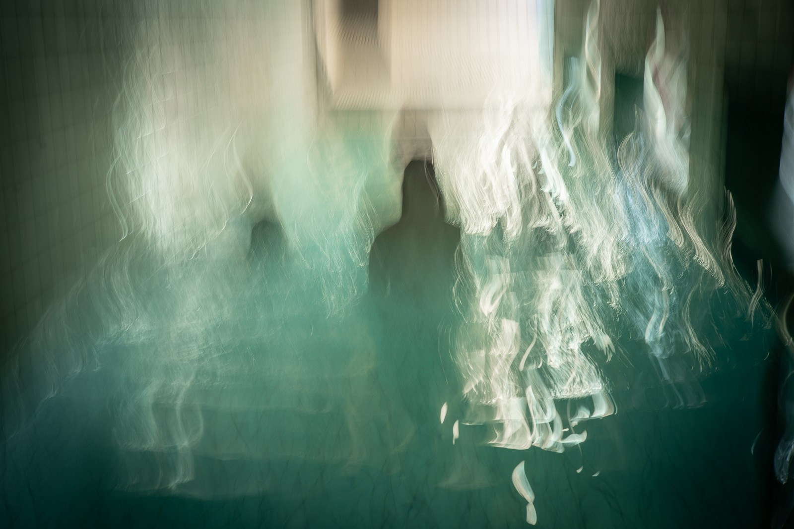
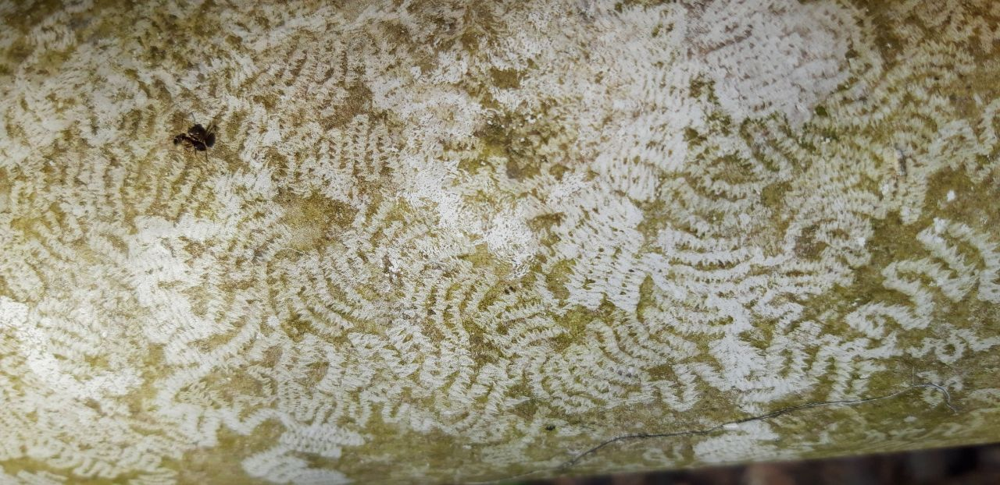
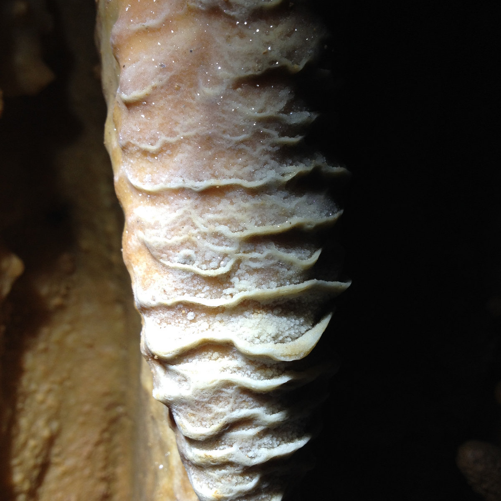

Interdisciplinary artist. Voice, video, writing, performance and sound.
↓

►
►
►Selected work
with Maryam Farhang, Goha Goździk, Eva Ursprung
2025 – 2026
Three artists transform the Badehaus into an intimate space through stories, poetry, sound and movement, opening a collective exploration of the emotional turbulences that surface in dreams of dark waters.
Works, by tag
Upcoming
Timeline — sediment of years
Reading
Since 2019, Anna Jurkiewicz explores landscapes created by water through deep-time processes of dissolution and sedimentation, especially karst as a hydro-acoustic porous environment.
Many of her projects focus on multispecies relations that produce space and habitats, strengthening interspecies empathy through sensory walks, collective mapping, ecopoetry and participatory scores for embodied cognition.